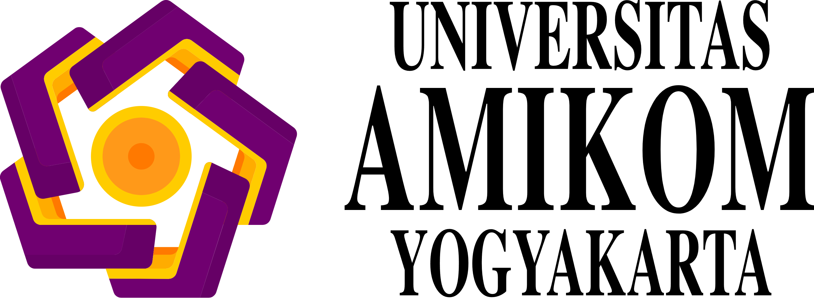

Preview Presentasi — CraftAI Studio
UTS Technopreneur (SI134) · Semester Ganjil 2026/2027 · Kelompok 10 · 16 slide · 16:9
D:/Project/B2C-TUGAS-UAS/tugas-uts/Presentasi-CraftAI-Studio-Kelompok-10-UTS-SI134.pptx
03UMKM sudah online, materinya belum meyakinkan.
buka asli
04Draft oleh AI, keputusan oleh manusia.
buka asli
05B2C per order, dengan human-in-the-loop.
buka asli
06Sembilan blok yang saling mengunci.
buka asli
07Satu hari uji: 56 order, 107 draf, 127 log.
buka asli
08Empat segmen sasaran CraftAI Studio.
buka asli
09Empat sudut pandang, satu gambaran segmen.
buka asli
10Siapa, kapan, di mana, berapa biaya.
buka asli
12Lima tahap, empat kolom pembacaan.
buka asli
13Dari bingung, ke antusias, lalu loyal.
buka asli
14Dari peta ke lima rencana aksi berprioritas.
buka asli
15AI mempercepat, manusia menjamin.
buka asli